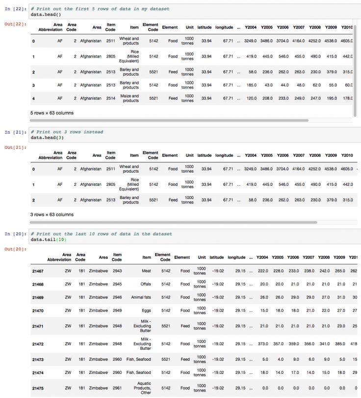
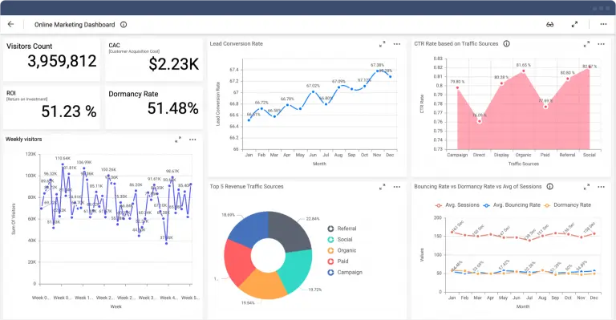

Eksplorasi Awal Dataset Produksi Pangan
Menampilkan sebagian data (head/tail) dan mengamati struktur kolom untuk memahami atribut serta kebutuhan pra-pembersihan.

Mahasiswa Teknik Informatika — Beginner Data Analyst
Berikut ringkasan proyek pembelajaran yang menggambarkan workflow dasar seorang analis data: pemahaman dataset, pembersihan data, visualisasi, dan interpretasi awal.

Menampilkan sebagian data (head/tail) dan mengamati struktur kolom untuk memahami atribut serta kebutuhan pra-pembersihan.

Dashboard interaktif sederhana untuk memantau metrik marketing seperti trafik, CTR, dan konversi yang mendukung pengambilan keputusan taktikal.

Analisis deskriptif atas skor akademik dan faktor pendukungnya; fokus pada distribusi nilai, korelasi sederhana, dan rekomendasi awal.